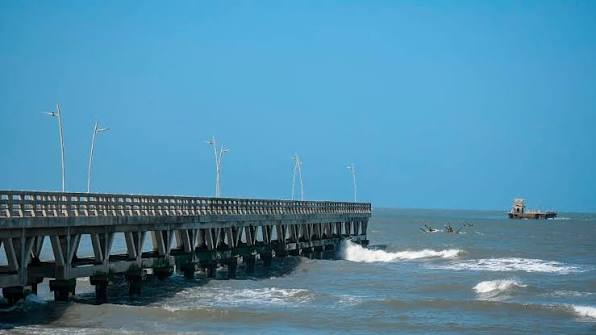

Luces sobre Puerto Colombia
Ovnis / Fenómenos luminosos en el Caribe

El misterio sobre el mar
Frente a las costas del departamento del Atlántico se encuentra Puerto Colombia, un municipio cuya historia está estrechamente relacionada con el mar Caribe. Sus playas, el antiguo muelle y sus paisajes costeros ofrecen un escenario particular para observar el cielo durante la noche. Sin embargo, la oscuridad del horizonte marino también puede convertir algunas luces lejanas en fenómenos difíciles de identificar.
A lo largo del tiempo, las luces observadas sobre el Caribe colombiano han despertado curiosidad entre los habitantes de diferentes municipios. Algunos reportes ciudadanos describen puntos luminosos que parecen desplazarse, permanecer suspendidos o desaparecer repentinamente. Estas observaciones suelen generar preguntas sobre su procedencia y han alimentado conversaciones relacionadas con los objetos voladores no identificados.
Uno de los acontecimientos que llamó la atención en el departamento ocurrió en febrero de 2024. Habitantes de Barranquilla, Sabanagrande, Sabanalarga y otros municipios del Atlántico compartieron imágenes de varias luces que avanzaban por el cielo en formación. Los registros circularon rápidamente por las redes sociales y provocaron diferentes interpretaciones sobre un posible avistamiento extraterrestre.
La explicación llegó posteriormente. Las luces correspondían a un conjunto de satélites Starlink y elementos relacionados con el lanzamiento de un cohete Falcon 9 desde Cabo Cañaveral, Florida. El acontecimiento demostró cómo algunos fenómenos tecnológicos pueden parecer extraordinarios cuando se observan desde la superficie terrestre.
Puerto Colombia también cuenta con un elemento particular que transforma su paisaje nocturno: la Ventana de Sueños. Esta estructura de aproximadamente 70 metros funciona como un faro marítimo y posee un sistema de iluminación visible a grandes distancias. Su presencia constituye una referencia luminosa importante para las embarcaciones que navegan cerca de la costa.
Según información de la Dirección General Marítima (DIMAR), el faro dispone de una linterna giratoria de alta luminosidad con un alcance de 20 millas náuticas. Este tipo de infraestructura permite comprender cómo las luces artificiales también forman parte del paisaje nocturno del Caribe y pueden llamar la atención de quienes observan el horizonte desde la playa.
A pesar de las explicaciones conocidas, el cielo sobre Puerto Colombia sigue siendo un escenario fascinante para los amantes de la astronomía y la ufología. Las luces distantes, los reflejos sobre el agua y los objetos que cruzan el firmamento mantienen viva la curiosidad por aquello que todavía no logramos identificar.
¿Qué puede esconder el horizonte cuando cae la noche? ¿Son satélites, aeronaves, fenómenos atmosféricos o simplemente luces que todavía no hemos conseguido identificar? Frente al mar Caribe, cada observación puede convertirse en una nueva historia.
Luces y fenómenos en el horizonte
Satélites artificiales: los satélites Starlink pueden observarse como puntos luminosos que atraviesan el cielo siguiendo una trayectoria aparentemente ordenada.
Señales marítimas: los faros y las ayudas a la navegación emiten señales luminosas para orientar las embarcaciones que transitan cerca de la costa.
Fenómenos atmosféricos: las nubes, la humedad, los reflejos y las condiciones de visibilidad pueden modificar la apariencia de las luces observadas a grandes distancias.
Fuentes de consulta
El Heraldo. (2024). EH verifica: ¿se vieron ovnis en el Atlántico y otros departamentos? Reportes de luces en diferentes municipios de la región.
Consultar fuenteNoticias Caracol. (2024). ¿Eran ovnis? Extrañas luces se vieron en Antioquia, Atlántico y otros departamentos. Explicación sobre los satélites Starlink.
Consultar fuenteDirección General Marítima (DIMAR). (2023). La Ventana de Sueños de Puerto Colombia: un faro visible a 20 millas náuticas.
Consultar fuente